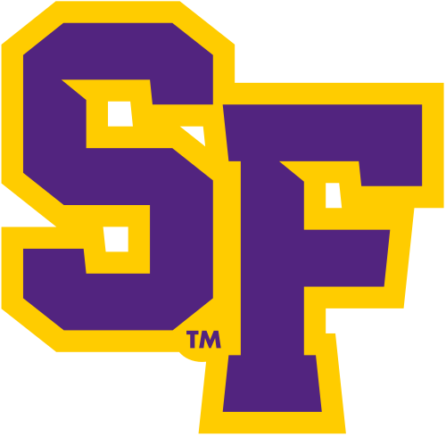

SwiftSight
An iOS app leveraging the device camera and Core ML for object recognition in real-time. Developed to help visually impaired users identify everyday objects with instant feedback.
Prospective Software Engineer
Hello! I'm Damian, a Junior majoring in Computer Science at San Francisco State University . I specialize in iOS development, blending my love for creative problem-solving with the power of Swift. My interests revolve around exploring machine learning, vision-based applications, and pushing the boundaries of what mobile platforms can do. Outside of coding, you can find me at EDM shows, sampling new cuisines, or planning my next adventure. I’m a firm believer in continuous growth and the importance of staying curious in a fast-paced tech world.
| Course | Semester |
|---|---|
| Advanced Programming | Fall 2024 |
| Data Structures | Fall 2024 |
| Web Development | Spring 2025 |
| Programming Methodology | Spring 2025 |
An iOS app leveraging the device camera and Core ML for object recognition in real-time. Developed to help visually impaired users identify everyday objects with instant feedback.
A native iOS to-do list application built using SwiftUI. Implements local notifications to remind users of scheduled tasks, with a clean and intuitive UI.
An iPhone app focusing on meal-tracking and recipe suggestions. Features user authentication, progress charts (using Charts framework), and integration with HealthKit to track calorie intake.
Created a macOS, iPadOS, and visionOS application to educate users about endangered animal species. The app provides in-depth information, scientific facts, and interactive elements, including Spatial Audio integration that immerses users in authentic animal sounds.
Developed an iOS application to assist students in studying medical anatomy through an engaging and interactive experience. The app features a vibrant, user-friendly interface, memory-based learning games, and structured study modules built using Swift and SwiftUI.